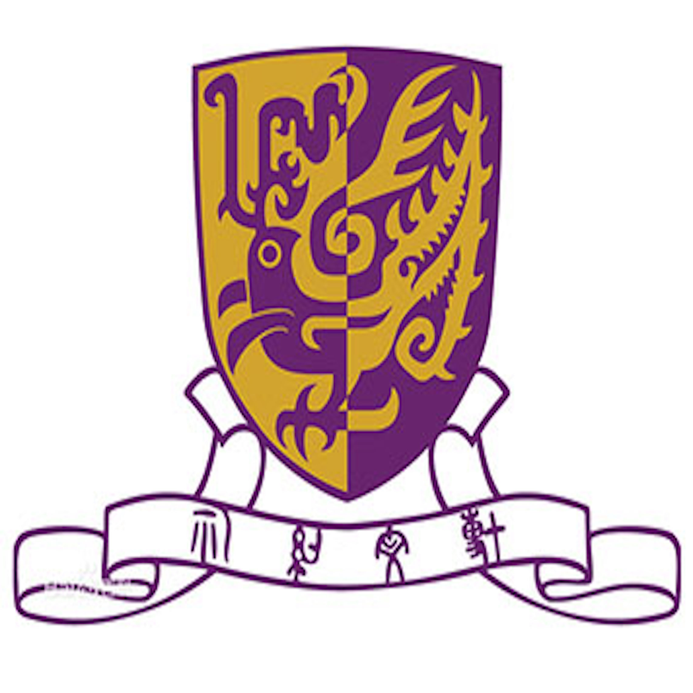

-
2013.09---2017.07
Jilin University
Major: Chinese Degree：Bachelor of Arts
Minor: Law Degree:Bachelor of Law -
2015.07-2016.09
The Beijing News
Full-Time Intern Journalist
Published thirteen stories on its social media section.
Participated in the report of the search of MH370 and Tianjin Port Explosion Accident. -
2016.02-2016.04
China Youth Daily
Full-Time Intern Editor
Edited fourteen issues of e-magazines about important news in NPC and CPPCC
Assisted in making some HTML5 project -
2016.07-2016.09
East Asian Economic News
Full-Time Intern Journalist
Wrote daily educational and medical news in Jilin province and published eight stories -

2017.03-Now
365Days in HongKong
Full-Time Intern Editor
Work as an writter on retweet articles and work for platform operation.
Published more than 10 articles with over 10 thousand times reading. -

2017.09-2018.07
Chinese University of HongKong
College of ommunication and Journalism
MS.c in New Media -
Hire Me!